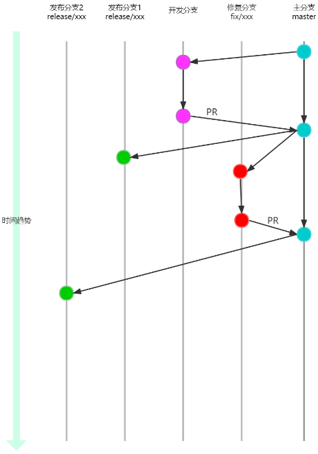
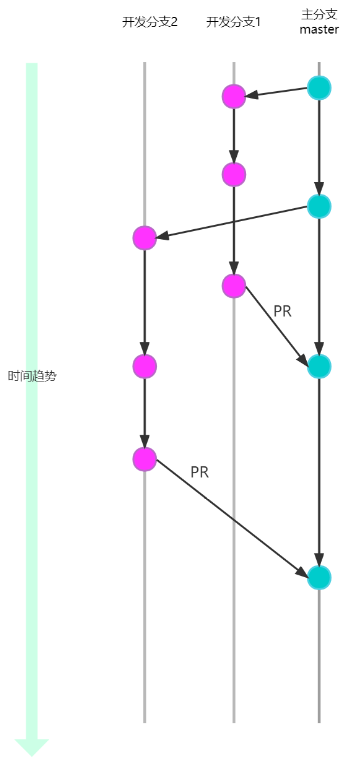
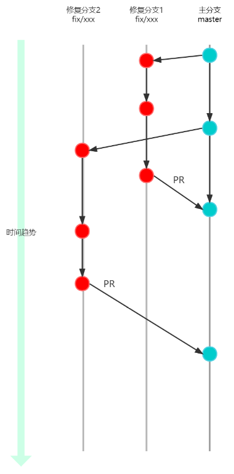
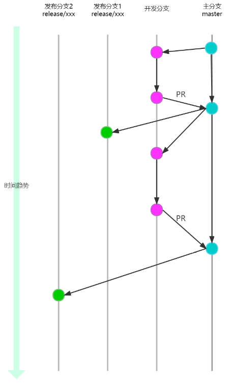
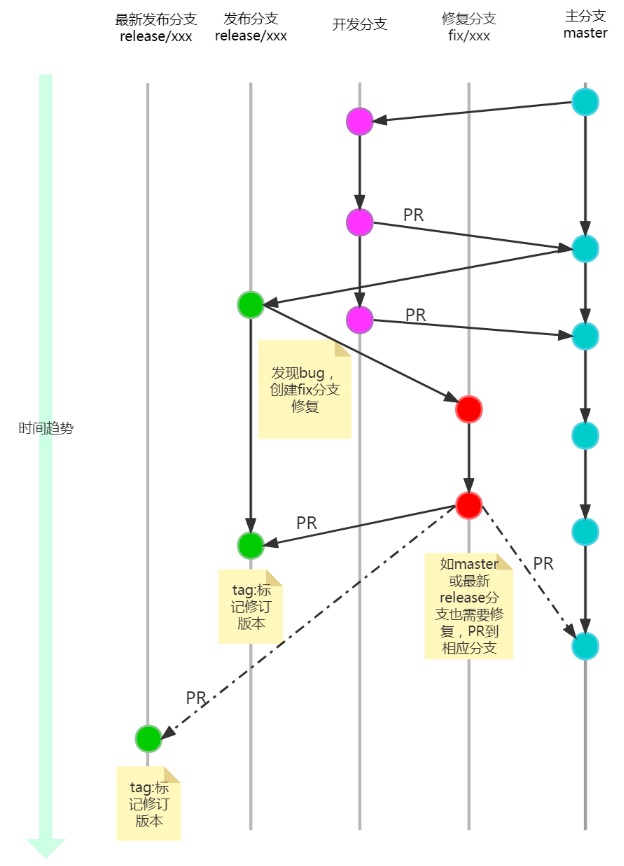
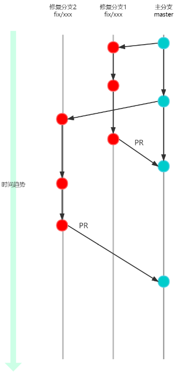

软件迭代开发规范
版次：2023年1月31日 第1.4版
类型：程序文件
作者：软件部
上海维宏电子科技股份有限公司 版权所有
1 目的
编写本规范的目的是为了统一软件迭代开发协同约定、从而提高软件开发效率与规范。主要约定软件迭代版本号及git分支管理。
2 范围
本规范适用于公司所有产品的GIT仓库代码。
- 对于采用 MSF 作为开发流程的项目来说，本制度为强制性的。
- 对于其它新项目GIT仓库，本制度为强制性的。
- 对于其它旧项目GIT仓库，应尽可能参照本制度执行。
3 用词说明
为了便于在执行本标准条文时区别对待，对要求严格程度不同的用词说明如下：
1） 表示很严格，非这样做不可的用词：
正面词采用“必须”，反面词采用“严禁”；
2） 表示严格，在正常情况下均应这样做的用词：
正面词采用“应”，反面词采用“不应”或“不得”；
3） 表示允许稍有选择，在条件许可时首先应这样做的用词：
正面词采用“宜”，反面词采用“不宜”；
4） 表示有选择，在一定条件下可以这样做的用词，采用“可”。
条文中指明应按其他有关标准、规范执行的写法为：“应符合……规定”或“应按……执行”。
4 术语和定义
为了确保对术语的一致性理解，此处定义本文档用到的术语：
- MSF： Microsoft Solution Framework 的缩写，是微软产品研发的方法论，2022 年起公司借鉴其方法论开展研发管理工作。
- GIT仓库：GIT是分布式版本控制系统。研发过程中的文档、代码、测试用例等文件存放在GIT版本控制的仓库中。
- 开发分支：包含feature、doc、style、refactor、test、build，chore。
- PR：拉取请求功能，代码经过评审后合并到目标分支。
- 软件发布：软件发布前为创建release分支提供给测试人员测试，软件未发布提供给客户，软件发布后为软件经过测试人员测试，软件已经发布提供给客户
5 版本号规约
遵循语义化版本2.0进行定义， 格式为: 主版本号(major) .次版本号(minor).修订号(patch) 。
标准的版本号必须（MUST）采用 X.Y.Z 的格式，其中 X、Y 和 Z 为非负的整数，且禁止（MUST NOT）在数字前方补零。X 是主版本号、Y 是次版本号、而 Z 为修订号。每个元素必须（MUST）以数值来递增。例如：1.9.1 -> 1.10.0 -> 1.11.0。
5.1 主版本号
主版本号，也叫首位版本号、顶位版本号，即V后第一个版本号。除非大规模api不兼容、产品方向改变、底层架构升级等情况外不轻易更新。
如：
Phoenix 底层进行了重构升级，对应版本从V5.x 升级为V6.x。
NcStudio V15.x依赖的Phoenix版本从V5.x升级为V6.x后， 对应软件会被升级为NcStudio V16.x。
注意：产品线产品版本号和平台版本号可以是无关的。
5.2 次版本号
次版本号，也叫迭代号，一般代表某个迭代发布的功能集合（一个迭代发布会包含若干个功能更新）。
次版本号在以下情形下会被更新：
- 新的 API 被添加。
- 新的功能被支持。
- 重要依赖包的新版本被采用。
如：Phoenix正式发布版本6.2.2后，若增加新功能，或增加公开API（包含寻址，ncprog及target公开函数清单），必须增加次版本号。
NcStdio V16.0.0正式发布后， 如增加了新功能，或者从Phoenix 6.2升级为Phoenix6.3, 则必须增加次版本号。
5.3 修订号
修订号是为了某些小功能的临时上线，热修复的临时上线设置的小迭代，通常不包含大的功能性更新，常常是围绕某个功能点进行升级或者某个bug的修复进行上线。
如：Phoenix正式发布版本6.2.2后， 产线发现bug后， 程序经理可以规划在6.2.3上修复。若需要紧急开发，可采用hotfix方式， 如版本6.2.2-hotfix1。
NcStudio V16.0.0正式发布后， 客户发现bug后， 修复须增加修订号。
5.4 先行版本号
语义化版本2.0中定义
先行版本号可以（MAY）被标注在修订版之后，先加上一个连接号再加上一连串以句点分隔的标识符来修饰。标识符必须（MUST）由 ASCII 字母数字和连接号 [0-9A-Za-z-] 组成，且禁止（MUST NOT）留白。数字型的标识符禁止（MUST NOT）在前方补零。先行版的优先级低于相关联的标准版本。被标上先行版本号则表示这个版本并非稳定而且可能无法满足预期的兼容性需求。范例：1.0.0-alpha、1.0.0-alpha.1、1.0.0-0.3.7、1.0.0-x.7.z.92。
约定只能出现alpha, beta, rc, hotfix。 如：6.2.2-alpha01， 6.2.2-beta01, 6.2.2-hotfix01, 6.2.2-rc。
注意：alpha01采用01的方式， 根据语义化版本是为了符合版本升级规则。
alpha版本
此版本表示该软件在此阶段主要是以实现软件功能为主，通常只在发布团队内部交流，一般而言，该软件版本的Bug较多，需要继续修改，原则上alpha 版本携带的功能包含了本次发布的所有功能，但是在送代开发的情况下，可能会出现一些高优先级的功能优先发布内测的情况，这在软件开发的初期是比较常见的，这类情况的版本也有叫做(Pre-alpha)版本的，此情况下不同的alpha版本允许出现功能的确实和差异。 在发布范围已固定的开发场景下，通过 release 分支发布 alpha版本。 在开发过程中迭代测试的场景下，允许通过 master 分支发布alpha版本。
beta版本
此版本是软件最早对外部公开的软件版本，相对于alpha版本有了很大的改进，消除了严重的错误，但是还存在一些已知问题和较轻微的BUG。bete版本在功能范围上已经固定，原则上只允许修正Bug,不允许增删变动，所以beta版本必须通过 release 分支进行发布。
rc（Release Candidate）版本
此版本含义 是"发布候选版"，它不是最终的版本， 几乎就不会加入新的功能了，而主要着重于修复bug。
rc版本必须通过 release 分支进行发布。
hotfix版本
此版本是专门用来解决紧急问题和安全漏洞的版本。
hotfix版本必须通过 release 分支进行发布。分支策略见[6.4](#6.4 软件发布后 fix 版本)。
6 GIT开发流程

该工作流基于Trunk-based Development, 定义了一个围绕着主分支开发的GIT开发流程模型。
工作流以主分支作为交互中心。衍生出开发分支进行开发、发行分支进行测试发行、修复分支进行 bug 修复，一切都围绕着控制一个主分支并持续改进为本。
注意：创建分支前， 请务必拉取下最新版本。
6.1 开发分支
开发新功能与修复Bug时，开发人员应从 master 分支上创建分支。
注意：所有开发分支合并后， 请删除原有分支。 若要开发， 必须重新从 master 分支上创建分支；禁止PR成功后， 继续基于该分支开发，而应该重新从 master创建新分支。Trunk-based Development分支模型强调小步快跑， 频繁提交。
好处如下：
- 团队均基于
master开发， 减少后续的Merge冲突； - 利于团队利用持续集成，尽快编译， 测试代码。
分支目录名称约定：
- feature: 新功能开发
- fix: 修补 bug
- doc: 文档（对文档进行了修改）
- refactor: 重构（即不是新增功能，也不是修改 bug 的代码变动）
- test: 增加测试
- build: 对构建系统或者外部依赖项，CI生成脚本配置进行了修改
- chore: 不符合上述任何类型的相关更改
分支名约定：
- 分支的命名必须为
[分支目录]/*-workitem） *代表工作项编号（可选， 若无，后面的-可忽略）workitem代表工作简短描述（英文）
在对应的分支上做所有的开发工作，一旦分支开发完成， 必须及时PR到主分支并删除开发分支。
如：开发分支

fix 分支

6.2 发布分支

一旦 master 分支上做一次发布，就从 master分支上拉出一个 release 分支。新建的分支用于开始发布循环，发布分支仅用于发布，不会提交任何代码修改（版本号，历史记录等，视为分支的配置而不是代码内容，可以在发布分支上提交），严禁出现 master 与 release 分支之间的合并。
使用一个用于发布准备的专门分支，使得一个团队可以在完善当前的发布版本的同时，另一个团队可以继续开发下个版本的功能。
分支约定：
- 必须从
master分支 拉出release分支。 - 分支的命名必须为
release/*，*代表版本号（主版本号.次版本号，不应包含修订号，先行版本号），如为了区分不同产品的版本发布，命名可为release/产品名称-* - 所有正式发布的版本，必须有相应的
release分支对应。
6.3 修复发布分支
当测试或客户发现bug。应从 release 分支上拉出fix分支修复，修复完成后经过PR合并到 release 分支，并打tag标明修订版本，如master分支或最新release 分支也有此bug，应PR到相应分支。PR时如果fix分支与目标分支差异较大无法合并，可以单独对相应分支进行修复。
分支约定：
- 应从
release分支拉出fix分支进行修复。 release分支修复后，应打tag标记修订版本。
如：

6.4 历史分支
历史分支通过多个 release 分支，记录项目的历史。
6.5 拉取请求PR
为了保证master分支的稳定性，其他分支合并到master的内容不能直接合并操作，必须通过PR评审通过后再进行合并。
PR必须开启如下限制
需要最少数量的审阅者：1（不允许用户审批自己的更改）
查看链接工作项：必需
检查注释解析：必需
PR可开启如下限制
强制执行合并战略：Squash合并（压缩多次提交为一次提交，使目标分支提交记录线性）
必需审阅者：必须通过某人批准后可以通过审核
7 分支管理示例
下面的示例演示本工作流如何用于管理单个发布循环。假设你已经创建了一个主分支项目。
开发人员：Mary、Bill
7.1 准备主分支
由仓库管理员初始化 master 分支，此分支将会包含整个项目的全部历史提交。
7.2 Mary、Bill分别开发新功能
7.3 Mary开始准备发布
这个时候Bill正在实现他的功能，Mary开始准备她的第一个项目正式发布。像功能开发一样，她用一个新的分支来做发布准备。这一步也确定了发布的版本号，
这个分支是清理发布、执行所有测试、更新文档和其它为下个发布做准备操作的地方，像是一个专门用于改善发布的功能分支。只要Mary创建这个 release 分支并通过测试组验证，这个发布就是功能冻结的。任何不在 release 分支中的新功能都推到下个发布循环中。
7.4 Mary完成发布
一旦准备好了对外发布，Mary会通知发布团队已就绪，由发布团队集成软件与发布说明，完成发布。
7.5 最终用户发现 Bug

对外发布后，Mary回去和Bill一起做下个发布的新功能开发，直到有最终用户开了一个Ticket抱怨当前版本的一个 Bug。
为了处理Bug，Mary（或Bill）应从 master 分支上拉出了一个 fix 分支，提交修改以解决问题，然后PR合并回 master 分支。
然后就可以安全地删除这个fix分支了。